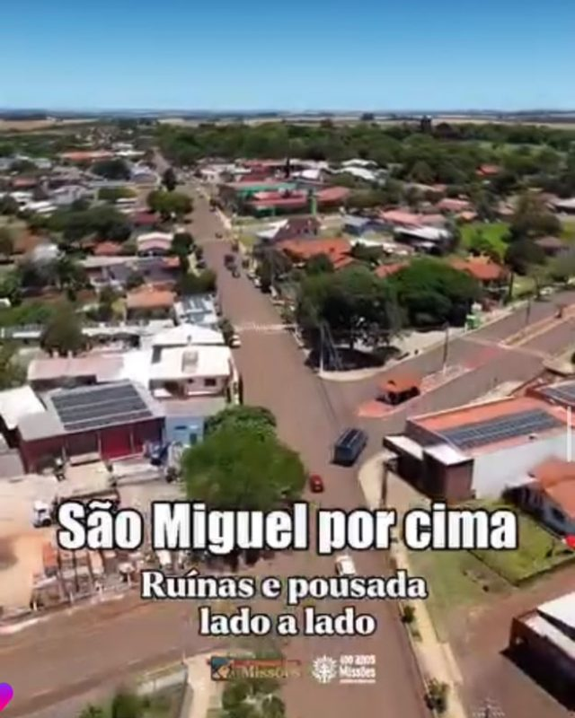
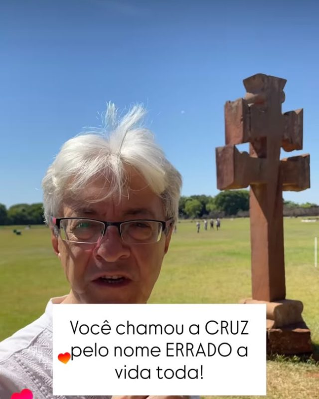

pousada das missões
Sobre o projeto: Instagram e anúncios de uma pousada ao lado do Patrimônio Mundial, em São Miguel das Missões. Cuido de tudo há mais de um ano: calendário, artes, Reels, legendas e campanhas.
Resultado: 500 mil visualizações em 90 dias, +1.502 seguidores e 1.369 conversas no WhatsApp vindas dos anúncios, com custo a partir de R$ 1,16 por conversa.
os números
Todos os números saem do Instagram da pousada e do Gerenciador de Anúncios. Clique nos prints para ampliar.
Instagram 18 de junho a 15 de setembro de 2026
- 500 mil
- visualizações em 90 dias
- +1.502
- novos seguidores
- 56,6%
- das visualizações vieram de quem ainda não seguia
- 11.593
- interações no período



Anúncios no Facebook e Instagram maio a agosto de 2026 · 9 campanhas
- 1.369
- conversas iniciadas no WhatsApp
- R$ 1,16
- melhor custo por conversa
- R$ 2.431
- investidos no total
- 266 mil
- pessoas alcançadas
O anúncio “2 dias em São Miguel” gerou 430 conversas a R$ 1,16 cada, com R$ 499,80 investidos.
O Reel “Do Patrimônio Mundial…” rodou três vezes, em datas diferentes, e ficou entre R$ 1,17 e R$ 1,96 por conversa.
Um post de feed chegou a R$ 12,06 por conversa e foi cortado. Saber parar o que não rende também é resultado.